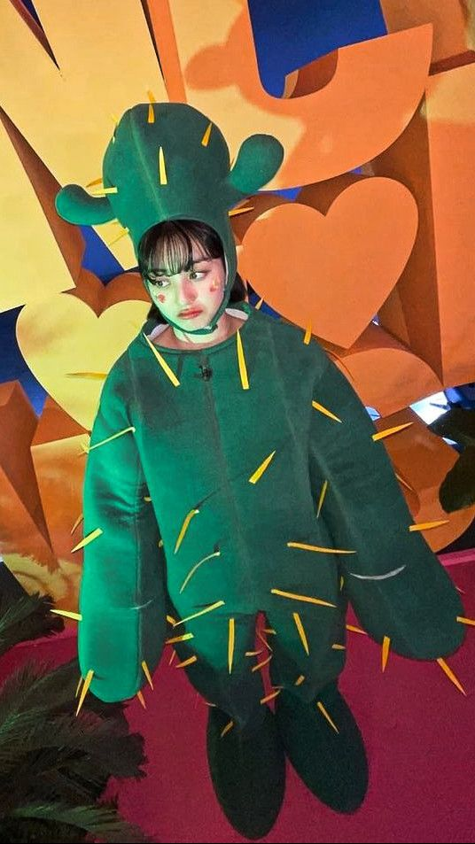

Quiénes son
TWICE es una popular girl group surcoreana formada por JYP Entertainment en 2015. Compuesta por nueve miembros: Nayeon, Jeongyeon, Momo, Sana, Jihyo, Mina, Dahyun, Chaeyoung y Tzuyu, el grupo se destacó por su estilo musical pegajoso y su energía vibrante. Su debut fue con el sencillo "Like Ooh-Ahh", que rápidamente capturó la atención del público. Desde entonces, Twice ha lanzado numerosos éxitos y álbumes, ganando una inmensa base de fans a nivel mundial, conocida como "Once". Con su mezcla de pop, baile y letras pegajosas, han establecido un legado importante en la industria del K-pop.
Mi grupo favorito
Con sus canciones y su forma de ser han cautivado a miles de personas alrededor del mundo, entre ellos, yo.
Cuando tenia 13 años las conocí por primera vez y poco a poco las fui queriendo más y más.
Hoy, después de casi 9 años de conocerlas, son lo mejor que me ha pasado en la vida. Han estado para mi cuando más lo necesitaba. Su música me llena el alma y el corazón de una manera que nadie puede hacerlo.
En este año, febrero 2024, tuve la oportunidad de verla en vivo y es lo mejor que he vivido en toda mi vida. Estoy profundamente agradecida con ellas.
I GOT YOU
Justo un día antes de venir a México, Twice lanzó un prerelease de su álbum With Youth, titulada I GOT YOU, por lo que nosotros fuimos los primeros en escucharla en vivo, y eso me llena de tanta emoción, es más, no puedo ni siquiera escuchar esa canción en un momento normal, tengo que saltarla o de lo conotrario procedo a llorar, recordando el mejor día de mi vida.
Más que un grupo de K-pop
Twice es más que un grupo de K-pop; son una verdadera familia. Se cuidan entre ellas y siempre están apoyándose en cada paso. Se nota el cariño en cada interacción, en cada sonrisa. Sus risas son genuinas y sus abrazos, cálidos. Cuando una está triste, las demás están ahí para levantarla. Celebran juntas cada logro y enfrentan los desafíos como un equipo. La forma en que se miran y se animan muestra un amor sincero y profundo. Para ellas, cada momento juntas es especial, y eso se siente en cada presentación y en cada canción.
Son especiales
Cada miembro de Twice aporta algo único al grupo, lo que las hace destacar aún más. Nayeon es la chispa alegre, siempre llena de energía y carisma. Jeongyeon, con su personalidad tranquila y serena, brinda un equilibrio perfecto. Momo es la talentosa bailarina con un sentido del humor encantador, mientras que Sana, con su dulzura y simpatía, roba el corazón de todos. Jihyo, como líder, es fuerte y motivadora, guiando al grupo con determinación.
Mina, con su elegancia y gracia, destaca en cada presentación. Dahyun, conocida por su personalidad divertida y carismática, siempre ilumina el ambiente. Chaeyoung es creativa y auténtica, mientras que Tzuyu, la más joven, irradia dulzura y frescura. Juntas, sus personalidades diversas se combinan en armonía, creando un grupo que no solo es talentoso, sino también entrañable y auténtico. Esta mezcla de características las hace verdaderamente únicas en la industria del K-pop.
Mi Bias
Mi bias es JIHYO, ella me anima a ser una mejor versión de mí y ella es un claro ejemplo de con perseverancia y dterminación puede cumplir tus metas. Poco a poco la he amado y sin duda es mi favorita y mi ejemplo a seguir.
